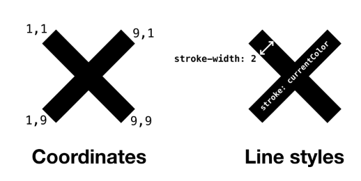
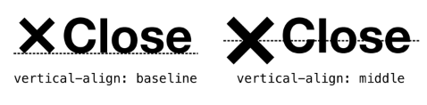
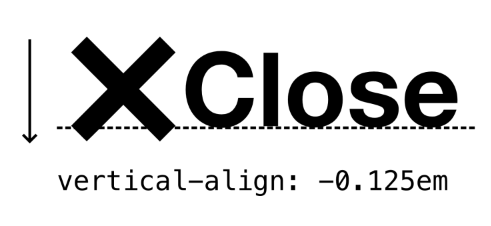
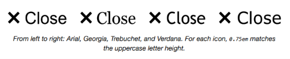
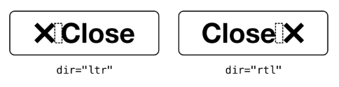
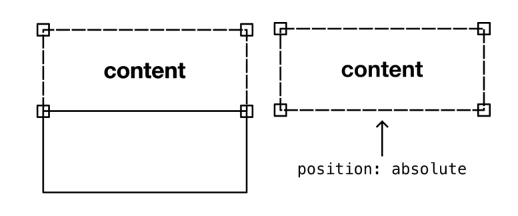

The Icon¶
El problema¶
La mayoría de los layouts en Every Layout toman la forma de componentes block-level ↗, si me permites la expresión. Esto es, establecen un contexto donde afectan el layout de los elementos hijos bajo su control. Como descubrirás en Boxes, los elementos con valores display de block, flex o grid son ellos mismos block-level (flex y grid difieren al afectar a sus elementos hijos de una manera especial).
Aquí, veremos algo mucho más pequeño, y no hay nada mucho más pequeño que un icono. Este será el primer layout para el cual el elemento personalizado conservará su modo de visualización inline predeterminado.
Hacer que las cosas se alineen y se vean bien puede ser un negocio precario. Cuando se trata de iconos, tenemos que preocuparnos por cosas como:
- La distancia entre el icono y el texto
- La altura del icono comparada con la altura del texto
- La alineación vertical del icono con el texto
- Qué sucede cuando el texto viene después del icono, en lugar de antes
- Qué sucede cuando cambias el tamaño del texto
Un icono simple¶
Antes de analizar todo esto, primero te daré un curso rápido intensivo sobre iconografía SVG, ya que SVG es el formato de iconografía de facto en la web. Considera el siguiente código:
Esto define un icono simple: una cruz. Déjame explicar cada una de las características clave:
viewBox: Esto define el sistema de coordenadas para el SVG. La parte0 0significa "contar desde la esquina superior izquierda" y la parte10 10significa darle al "lienzo" SVG 10 coordenadas horizontales y 10 verticales. Estamos definiendo un cuadrado, ya que todos nuestros iconos ocuparán un espacio cuadrado.widthyheight: Esto establece el tamaño del icono. Explicaré por qué usa la unidadem, y está configurado a0.75emen breve. Por ahora, ten en cuenta que establecemos el ancho y la altura en el SVG, en lugar de en CSS, porque queremos mantener el icono pequeño incluso si CSS falla al cargar. Los SVG se muestran muy grandes en la mayoría de los navegadores por defecto.strokeystroke-width: Estos atributos de presentación le dan a los elementos<line />una forma visible. Pueden escribirse, o anularse, en CSS. Pero como no estamos usando muchos, es mejor asegurarse de que estos también sean independientes de CSS.<line />: El elemento dibuja una línea simple. Aquí tenemos una dibujada desde la esquina superior izquierda a la inferior derecha, seguida por una dibujada desde la esquina superior derecha a la inferior izquierda (haciendo nuestra cruz). Estoy usando1y9, no0y10, para compensar elstroke-widthde la línea. De lo contrario, la línea desbordaría el "lienzo" SVG.

Hay muchas formas de dibujar la misma forma de cruz. Quizás la más eficiente es usar un elemento <path />. Un path te permite colocar todas las coordenadas en un atributo. El símbolo M marca el inicio de las coordenadas separadas de cada línea:
Cuando tus datos SVG son tan concisos, no hay razón para no incluirlos inline en lugar de usar un <img /> que apunte a un archivo SVG. Hay otras ventajas además de poder prescindir de una solicitud HTTP, como la capacidad de usar currentColor como se muestra. Esta palabra clave hace que tu SVG inline adopte el color del texto circundante. Para los iconos de demostración a seguir, los iconos se incluyen a través del elemento <use>, que referencia uno de muchos <symbol>s de iconos definidos en un solo archivo icons.svg (y por lo tanto una sola solicitud HTTP). La técnica currentColor aún funciona al referenciar datos SVG de esta manera.
En cualquier caso, SVG es un formato eficiente, mucho mejor adaptado a la iconografía que las imágenes rasterizadas como PNG, y sin los consiguientes problemas de accesibilidad ↗ de las fuentes de iconos.
Nuestra tarea aquí es crear un lienzo SVG confiable para iconos cuadrados, y asegurar que se ajuste perfectamente junto al texto, con el mínimo de configuración manual.
La solución¶
Alineación vertical¶
Como sugiere la nota anterior sobre currentColor, vamos a tratar nuestros iconos como texto, y hacer que acompañen al texto tan perfectamente como sea posible. Afortunadamente, el SVG se sentará en la línea base del texto por defecto, como si fuera una letra.
Para iconos más altos, podrías esperar poder usar vertical-align: middle. Sin embargo, contrario a la creencia popular, esto no alinea alrededor del medio vertical de la fuente, sino el medio vertical de las letras minúsculas de la fuente. Por lo tanto, el resultado probablemente será indeseable.

En su lugar, ajustar la alineación vertical para un icono más alto será probablemente cuestión de proporcionar el atributo vertical-align con una longitud. Esta longitud representa la distancia por encima de la línea base, y puede tomar un valor negativo.

Para nuestro layout Icon, nos limitaremos a colocar los iconos en la línea base. Este es el enfoque más robusto ya que los iconos que cuelgan debajo de la línea base pueden chocar con una línea sucesiva de texto donde ocurre wrapping.
Coincidencia de altura¶
Una altura de icono adecuada, comenzando desde la línea base, depende algo de las mayúsculas/minúsculas de la fuente y la presencia o ausencia de descenders ↗. Donde las letras son todas minúsculas, e incluyen descendentes, las cosas pueden verse particularmente desequilibradas.
Esta demostración interactiva solo está disponible en el sitio de Every Layout ↗.
Este problema perceptual se puede mitigar asegurando que la primera letra del texto que acompaña al icono esté siempre en mayúscula, y que el icono en sí mismo tenga la altura de una letra mayúscula.
Igualar la altura de la letra mayúscula real es otro asunto. Podrías esperar que 1em sea el valor, pero rara vez es el caso. 1em se corresponde más estrechamente con la altura de la fuente en sí misma. Al hacer selecciones de texto de algunas fuentes, verás que la altura de la fuente es a menudo más alta que sus letras mayúsculas. Dicho de otra manera: 1em corresponde a las métricas de la fuente, no a las métricas de las letras.
En mi experimentación, encontré que 0.75em se aproxima más a la altura de las letras mayúsculas. Por lo tanto, los atributos de presentación para mi icono de cruz son 0.75em cada uno, para hacer un cuadrado siguiendo el precedente establecido por el viewBox.

De izquierda a derecha: Arial, Georgia, Trebuchet y Verdana. Para cada icono,
0.75emcoincide con la altura de la letra mayúscula.
Sin embargo, la emergente unidad cap ↗ promete evaluar la fuente individual para una coincidencia más precisa. Dado que actualmente no es muy compatible, podemos usar 0.75em como respaldo en nuestro CSS:
Mejor tener los valores 0.75em en el CSS también, en caso de que un autor haya omitido los atributos de presentación.
Como Andy escribió en Relative Sizing With EM units ↗, el icono ahora escalará automáticamente con el texto: 0.75em es relativo al font-size para el contexto. Por ejemplo:
Esta demostración interactiva solo está disponible en el sitio de Every Layout ↗.
Coincidencia de altura de letra minúscula¶
Si el texto de tu icono va a estar en minúsculas, puedes obtener mejores resultados haciendo coincidir la altura del icono con una letra minúscula. Esto ya es posible usando la unidad ex que pertenece a la altura de una 'x' minúscula. Es posible que también quieras forzar el tipo de letra minúscula.
Espaciado entre icono y texto¶
Para establecer cómo gestionamos el espaciado de nuestros iconos, tenemos que sopesar la eficiencia contra la flexibilidad. En los sistemas de diseño, a veces la inflexibilidad puede ser una virtud, ya que impone regularidad y consistencia.
Considera nuestro icono de cruz en contexto, dentro de un elemento botón y junto al texto "Close":
Nota el espacio (punto unicode U+0020, si quieres ser científico) entre el SVG y el nodo de texto. Esto agrega un espacio visible entre el icono y el texto, como estoy seguro puedes imaginar. Ahora, no tienes control sobre este espacio. Incluso agregar un espacio extra de la misma variedad en el código fuente no te ayudará, ya que será colapsado a un solo espacio por el navegador. Pero es un espacio adecuado, porque coincide con el espacio entre cualquier palabra en el mismo contexto. De nuevo, estamos tratando el icono como texto.
Un par de otras cosas interesantes sobre usar el espaciado de texto simple con tus iconos:
- Si el icono aparece solo, el espacio no aparece (haciendo que el espaciado dentro del botón se vea desigual) incluso si permanece en el código fuente. También se colapsa bajo esta condición.
- Puedes usar el atributo
dircon el valorrtl(right-to-left) para intercambiar visualmente el icono de izquierda a derecha. El espacio aún aparecerá entre el icono y el texto porque la dirección del texto, incluyendo el espaciado, se ha invertido.

Es genial cuando podemos usar una característica fundamental de HTML para reconfigurar nuestro diseño, en lugar de tener que escribir estilos personalizados y adjuntarlos a clases arbitrarias.
Si deseas control sobre la longitud del espacio, tienes que aceptar un aumento en la complejidad y una disminución de la reutilización: No es realmente posible sin establecer un contexto para el icono para eliminar primero el espacio existente. En el siguiente código, el contexto es establecido por el elemento .with-icon y el espacio de palabras se elimina haciéndolo inline-flex.
El valor display: inline-flex se comporta como su nombre sugiere: crea un contexto flex, pero el elemento que crea ese contexto en sí mismo se muestra como inline. Emplear inline-flex elimina el espacio de palabras, liberándonos para crear un espacio/gap puramente con margin.
Ahora podemos agregar algo de margen. ¿Cómo lo agregamos de tal manera que siempre aparezca en el lugar correcto, como lo hacía el espacio? Si uso margin-right: 0.5em, funcionará donde el icono está a la izquierda, antes del texto. Pero si agrego dir="rtl", ese margen permanece a la derecha, creando un espacio en el lado equivocado.
La respuesta son las CSS Logical Properties ↗. Mientras que margin-top, margin-right, margin-bottom y margin-left pertenecen a la orientación y colocación física, las propiedades lógicas honran en su lugar la dirección del contenido. Esto difiere dependiendo de la dirección de flujo y escritura, como se explica en Boxes.
En este caso, usaría margin-inline-end con el elemento icono. Esto aplica margen después del elemento en la dirección del texto (de ahí -inline-):

Una desventaja con este enfoque más flexible para el espaciado es que el margen permanece incluso cuando no se proporciona texto. Desafortunadamente, aunque puedes apuntar a elementos solitarios con :only-child, no puedes apuntar a elementos solitarios no acompañados por nodos de texto. Por lo tanto, no es posible eliminar el margen con solo CSS.
En su lugar, podrías simplemente eliminar la clase with-icon, ya que solo crea las condiciones para el margen manual. De esta manera, los espacios permanecerán (y colapsarán automáticamente como se describió). En la implementación del componente personalizado a continuación, solo si se proporciona la prop space se convertirá el <icon-l> en un elemento inline-flex, y se eliminará el espacio de palabras.
Casos de uso¶
Ya has visto iconos antes, ¿verdad? Más frecuentemente los encuentras como parte de controles de botones o enlaces, complementando una etiqueta con una señal visual. Con demasiada frecuencia nuestros controles usan solo iconos. Esto está bien para iconos/símbolos altamente familiares como el icono de cruz de ejemplos anteriores, pero los iconos más esotéricos probablemente deberían venir con una descripción textual — al menos en las primeras etapas del uso de la interfaz.
Donde no se proporciona una etiqueta textual (visible), es importante que haya al menos una etiqueta perceptible por el lector de pantalla de alguna forma. Puedes hacer una de las siguientes:
- Ocultar visualmente ↗ una etiqueta textual (probablemente proporcionada en un
<span>) - Agregar un
<title>al<svg> - Agregar un
aria-labeldirectamente al elemento<button>padre
En el componente, si se agrega una prop label a <icon-l>, el elemento en sí mismo se trata como una imagen, con role="img" y aria-label="[el valor de label]" aplicados. Cuando es encontrado por un lector de pantalla fuera de un botón o enlace, el icono será identificado como una imagen o gráfico, y el valor aria-label se leerá. Cuando se coloca <icon-l> dentro de un botón o enlace, el rol de imagen no se anuncia. El elemento pseudo-imagen simplemente se utiliza como la etiqueta.
El generador¶
Usa esta herramienta para generar CSS y HTML básicos de Icon.
La herramienta generadora de código solo está disponible en el sitio de documentación adjunto ↗. Aquí está la solución básica, con comentarios.
HTML
Podemos emplear el elemento <use> ↗ para incrustar el icono desde un archivo remoto icons.svg.
CSS
La clase with-icon solo es necesaria si deseas eliminar el espacio de palabras natural y emplear margin en su lugar.
Como se describe en nuestra publicación de blog Dynamic CSS Components Without JavaScript ↗, puedes ajustar el valor del espacio declarativamente, en el elemento mismo, usando el atributo style:
El componente¶
Una implementación de elemento personalizado del Icon está disponible para descargar ↗.
API de Props
Las siguientes props (atributos) harán que el componente se renderice nuevamente cuando se alteren. Pueden ser alterados a mano — en las herramientas de desarrollo del navegador — o como sujetos del estado de la aplicación heredada.
| Nombre | Tipo | Default | Descripción |
|---|---|---|---|
space |
string | null |
El espacio entre el texto y el icono. Si es null, se preserva el espaciado natural de palabras |
label |
string | null |
Convierte el elemento en una imagen en tecnologías de asistencia y agrega un aria-label con el valor |
Ejemplos¶
Botón con icono y texto que lo acompaña¶
En el siguiente ejemplo, el <icon-l> proporciona un icono y texto que acompaña a un botón. El <icon-l> asume el nombre accesible del botón, lo que significa que el botón será anunciado como "Close, button" (o equivalente) en el software de lector de pantalla. El SVG se ignora, ya que no proporciona información textual.
En este caso, se ha establecido un espacio/margen explícito de 0.5em.
Botón con solo un icono¶
Cuando no se proporciona texto que lo acompañe, el botón corre el peligro de no tener un nombre accesible. Al proporcionar una prop label, el <icon-l> se comunica como una imagen etiquetada al software de lector de pantalla (usando role="img" y aria-label="[el valor de la prop]"). Este es el código creado:
Y este es el código después de la instanciación: